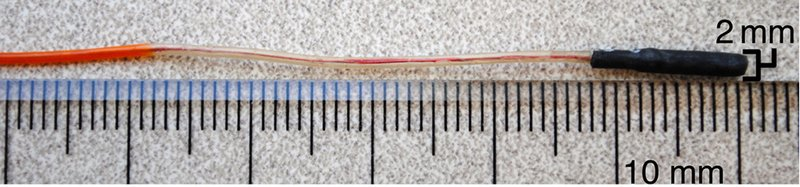

Magnetic navigation · marc_losey2014
MARC catheter
MARC (magnetically assisted remote-controlled) catheter steered by tip-coil current in the MRI field

1 / 3


- Family
- Magnetic navigation (magnetic-navigation)
- Devices
- own MARC microcatheters: 2 mm with solenoid coil at the tip (losey2014_magnetically abstract); 1.6 mm with double-saddle coils (moftakhar2015_new abstract)
- Degrees of freedom
- tip deflection in 1 axis (2014) or 2 axes (2015); advance and twist by hand
- Push
- Magnetic
- Twist
- Field direction
- Tested up to
- Animal
- Sim-to-real
- None found — No simulation-trained controller found for this robot.
Testing
- Highest level
- Animal
- What was tested
- 3 farm pigs (43 +/- 2 kg): MR-guided MARC renal artery embolization with the contralateral kidney under x-ray; embolization successful in all 6 kidneys (lillaney2016_endovascular abstract); in vitro cryogel abdominal aortic phantom: 192/240 (80%) turns with magnetic assistance vs 144/240 (60%) without (losey2014_magnetically abstract)
- Key numbers
- tip current 300 mA (losey2014_magnetically); MR-guided catheterization 93 +/- 56 s vs 60 +/- 22 s under x-ray (lillaney2016_endovascular); inexperienced operators 67% (1.5 T) and 75% (3 T) successful turns vs 76% under x-ray (moftakhar2015_new)
Mechanism
- Push (translation)
- magnetic (Lorentz torque on the current-carrying tip coil in the MRI main field); insertion by hand
- Twist (rotation)
- tip deflection set by coil current direction and magnitude
- Device range
- catheter OD 2 mm (2014), 1.6 mm (2015)
- Target anatomy
- interventional MRI: abdominal aortic branch catheterization, renal artery embolization
Sensing and interface
- Force sensing
- none
- Leader and haptics
- no: foot pedal (losey2014_magnetically) or in-room cart (lillaney2016_endovascular)
- Imaging
- real-time MRI at 1.5 T (bSSFP) and 3 T; compared with x-ray fluoroscopy
- Sterility
- N.R.
Size
- Footprint (mm)
- N.R. (clinical MRI scanner)
- Mass (kg)
- N.R.
Simulation
- Simulation model
- none found
- Sim-trained controller
- none found
Versions
- Lineage
- 2013: microcatheter tip deflection protocol (hetts2013_magnetically, JoVE); 2014: 2 mm catheter with a solenoid tip coil, foot pedal delivers +/-300 mA (losey2014_magnetically); 2015: 1.6 mm laser-lithographed dual-axis saddle coils, 1.5 T and 3 T (moftakhar2015_new); 2016: intramural copper-braided catheter with a saddle coil, in-room current cart (lillaney2016_endovascular)
Sources
- Magnetically Assisted Remote-controlled Endovascular Catheter for Interventional MR Imaging: In Vitro Navigation at 1.5 T versus X-ray Fluoroscopy · Radiology, 2014 · doi:10.1148/radiol.14132041 [losey2014_magnetically]
- Endovascular MR-guided Renal Embolization by Using a Magnetically Assisted Remote-controlled Catheter System · Radiology, 2016 · doi:10.1148/radiol.2016152036 [lillaney2016_endovascular]
- New-Generation Laser-lithographed Dual-Axis Magnetically Assisted Remote-controlled Endovascular Catheter for Interventional MR Imaging: In Vitro Multiplanar Navigation at 1.5 T and 3 T versus X-ray Fluoroscopy · Radiology, 2015 · doi:10.1148/radiol.2015142648 [moftakhar2015_new]
- Magnetically-Assisted Remote Controlled Microcatheter Tip Deflection under Magnetic Resonance Imaging · Journal of Visualized Experiments, 2013 · doi:10.3791/50299 [hetts2013_magnetically]
- A review of magnetic actuation systems and magnetically actuated guidewire- and catheter-based microrobots for vascular interventions · Intelligent Service Robotics, 2020 · doi:10.1007/s11370-020-00311-0 [li2020_magnetic]
Notes
- Notes
- Family: magnetic. Steering by current in the tip coil, insertion by hand; no bedside drive. No photo of the whole set-up (MRI room, current cart) in the four papers' figures; the picture is the catheter itself.
This record
- Read level
- abstract — abstract + figures (PMC author manuscripts of losey2014, lillaney2016, moftakhar2015; hetts2013)
- Picture
- li2020_magnetic Fig. 8e(B), reproduced there from losey2014_magnetically Fig. 1B ↗ — licence: publisher copyright; grade C
- Picture changes
- native extract from li2020_magnetic_ISR.pdf p. 9; cropped to panel B (panel letter removed); '2 mm' and '10 mm' labels kept; none upscaled
- Found by
- actuated-tip: Search of actuated-tip and magnetic devices.
- Data
- JSON · YAML:
records/robots/marc_losey2014.yaml - Correction
- Suggest a correction [repository not created yet]